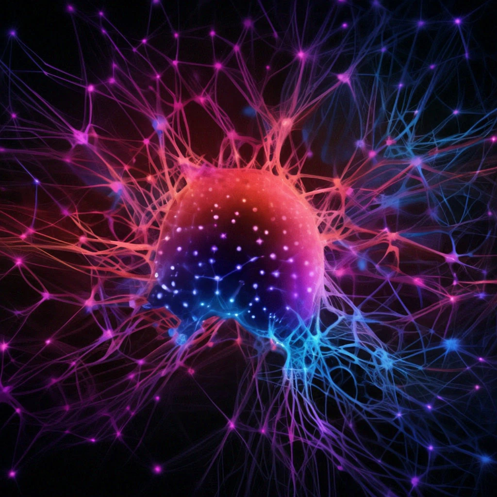

История создания
История создания и развития искусственного интеллекта (ИИ) насчитывает
множество веховых моментов. Одним из первых заметных шагов в развитии
ИИ стало создание электромеханического устройства под названием
"Идеальный механизм" Аристотеля в Древней Греции. Это устройство
используется для моделирования логических рассуждений и можно считать
прародителем современных машин поддержки принятия решений.
Второй период развития ИИ пришелся на Возрождение и Просвещение, когда
думатели начали активно обсуждать концепции творческого мышления и
развития искусственных алгоритмов для решения сложных проблем.
В 20-м веке на фоне быстрого технологического прогресса ИИ начал
развиваться как научная дисциплина. В 1943 году Уоррен Маккаллок и
Уолтер Питц создали первую математическую модель нейронной сети, а в
1956 году в Дартмутском колледже прошел знаменитый летний семинар,
который часто считается началом современного ИИ.
С тех пор развитие ИИ следовало чередой периодов активного прогресса и
затишья, включая знаменитый "застой в ИИ" в конце 1970-х, когда
многообещающие модели не оправдали своих ожиданий. Однако усилия и
научные разработки не прекращались, и впоследствии были созданы
революционные методы машинного обучения, нейронных сетей и глубокого
обучения, которые существенно изменили представление о возможностях
ИИ.
Сегодня искусственный интеллект продолжает активно
развиваться, находя применение в различных областях и формируя новые
горизонты технологических инноваций.
